COMO FUNCIONA?
É um jogo de tiro em primeira pessoa (FPS) multijogador 5v5 onde um time ataca e o outro defende. O modo de jogo principal, Desarme da Spike, é muito semelhante ao CS:GO. O objetivo da equipe atacante é plantar uma bomba (chamada de spike) e detoná-la, enquanto a equipe defensora tenta evitar isso. Independentemente da spike ser plantado ou não, se um esquadrão for eliminado antes de qualquer outra condição de vitória ser atendida, o esquadrão adversário vencerá. A primeira equipe vencer 13 rodadas vence a partida geral. No início da rodada, você terá 30 segundos para comprar armas e equipamentos para aquela rodada. Se você morrer em uma rodada, terá que esperar até a próxima rodada para reaparecer. Este modo de jogo principal pode ser jogado em partidas não classificadas ou classificadas.
FUÇÕES NO VALORANT:
Sentinelas
Sentinela é uma das quatro funções que os personagens do Valorant podem desempenhar na partida. Essa classe pode possuir varios nomes em outros jogos como "ancora", por eles ficarem a maior parte do tempo ancorados no bomb,quando na defesa; mas o principal papel desempenhado por eles é o de defesa do bomb, na defesa, e proteção da costas, no ataque. Também podem desempenhar o papel de suporte com maestria curando ou dando assistencia para os abates.
Agentes
Chamber
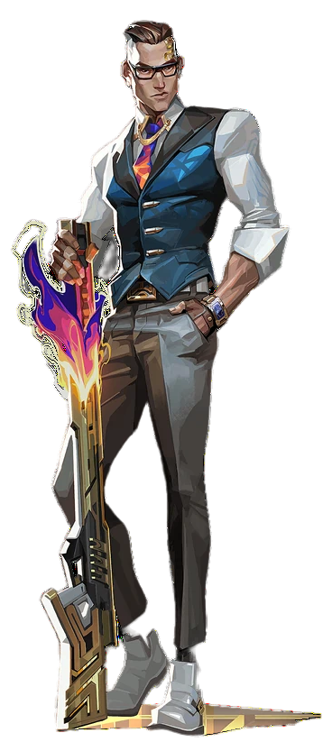Cypher
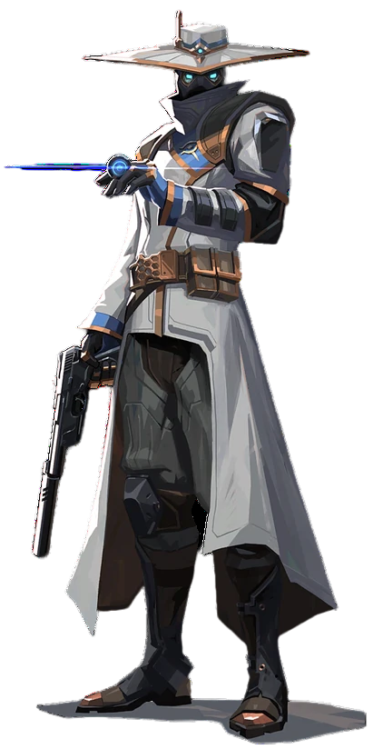Killjoy
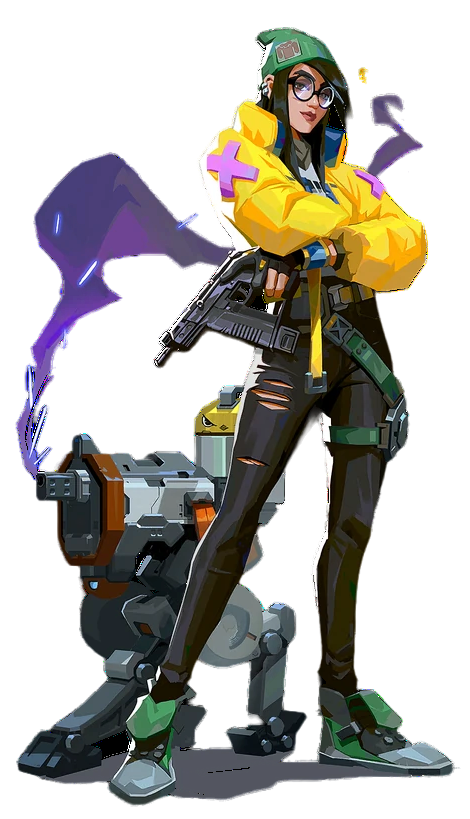Sage
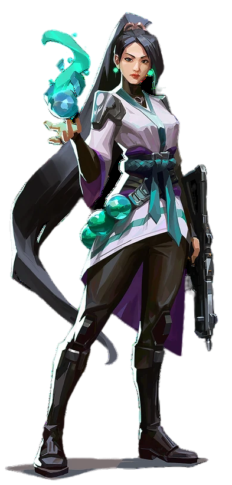Controladores
Controlador é uma das quatro funções que os personagens do Valorant podem desempenhar na partida. Essa classe possui a habilidade de cortar a linha de visão dos oponentes através de "smokes"(cortinas/granadas de fumaça), uma função indispensavel para qualquer partida no valorant. Essas habilidades geralmente podem ser usadas a distância, sendo assim eles são os melhores agentes para serem usados com lurkers da equipe ( pessoa da qualvaino bomboposto com intecao de pegar os adversarios de costas).
Agentes
Astra

Brimstone
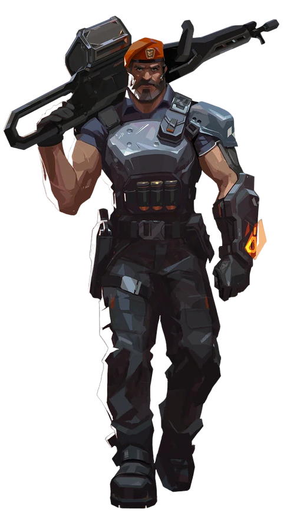Harbor
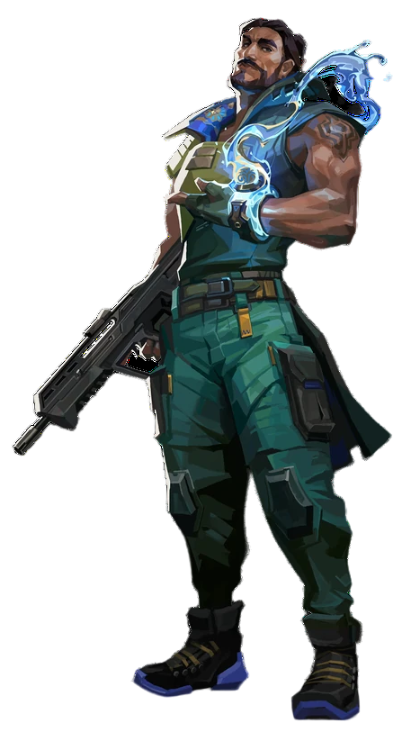Omen
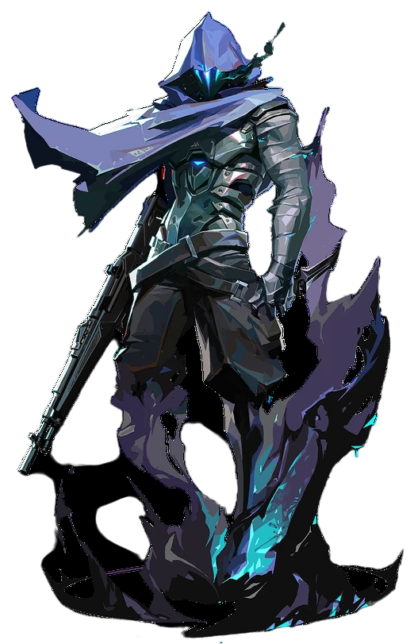Viper
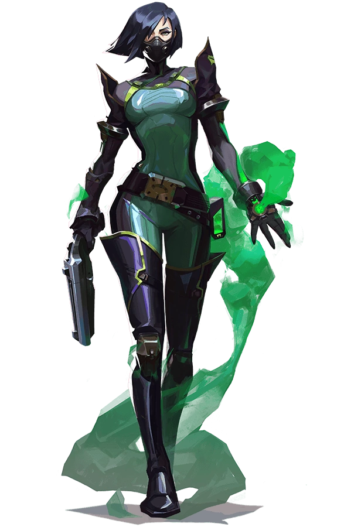Duelistas
Duelista é uma das quatro funções que os personagens do Valorant podem desempenhar na partida. Essa é a classe mais concorrida dentro do Valorant, principalmente dentre aqueles players que curtem a adrenalina de se jogar na linha de frente da sua equipe, com a intenção de facilitar a entrada de sua equipe em uma determinada área. Essa função em outros jogos eh determinada como Fragger. O jogador que está nessa posição geralmente terão mais abates na partida, mas causar abates não é sua função principal, mas, sim facilitar a entrada de sua equipe no bomb.
Agentes
Jett
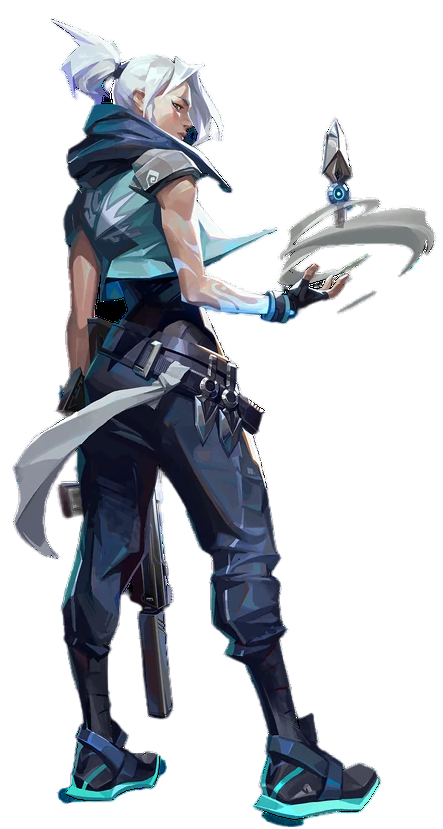Neon
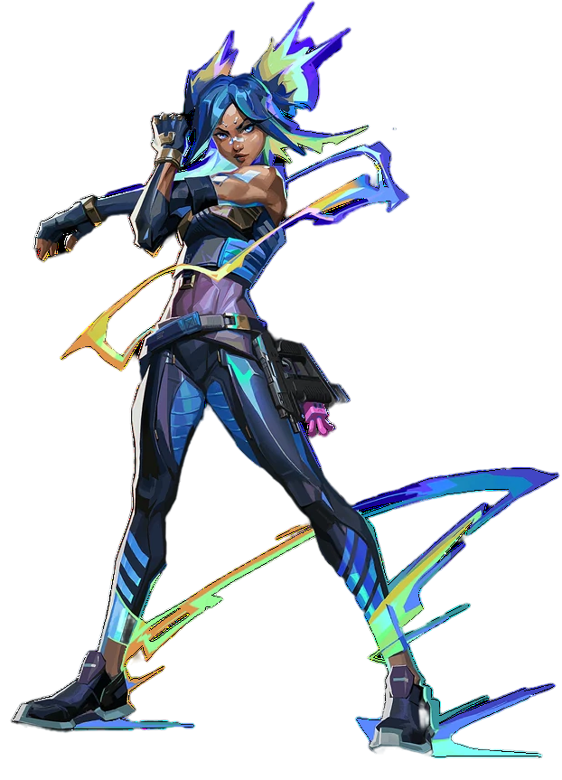Phoenix
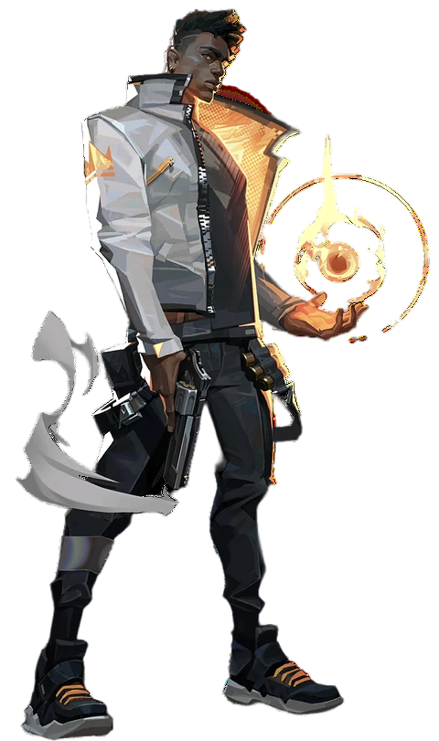Raze
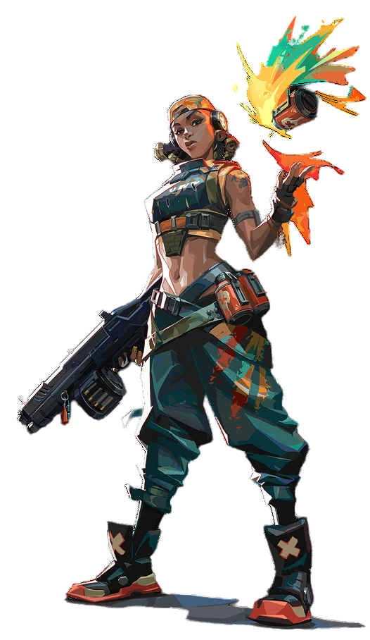Reyna
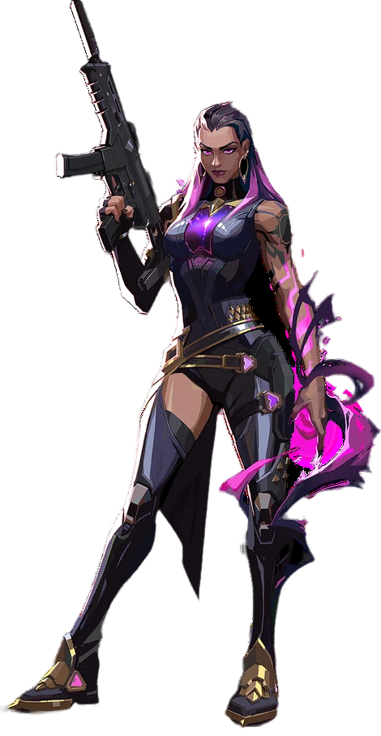Yoru
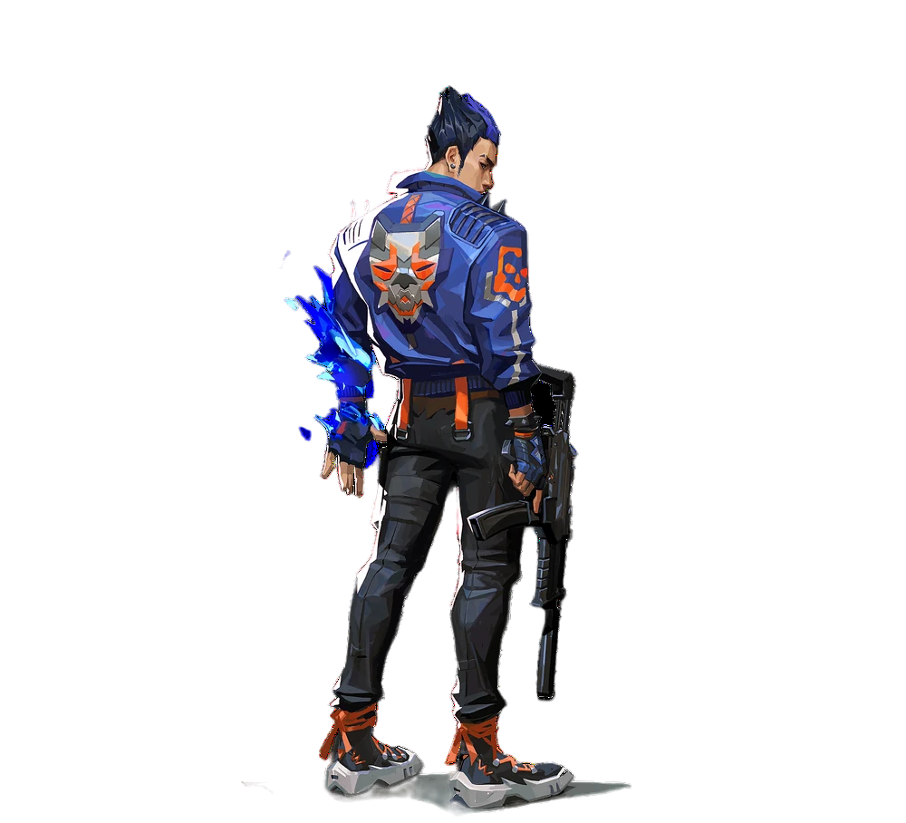Iniciadores
Iniciador é uma das quatro funções que os personagens do Valorant podem desempenhar na partida. Essa é uma classe que na minha opinião se encontra entre os Duelistas e os Sentinelas, pela razão de que, sua principal função é dar informações de uma área usando e abusando de suas habilidades. No entanto ele pode usar essas habilidades para interasse coletivo ou individual. Sendo assim uma das funções mais versateis, porque caso seu Duelista não abra o bomb ele pode facilitar a entrada do seu time atraves de suas habilidades de informação. Mas lembre sua principal função caso o Duelista seja ativo é dar informação a ele e seu time como suporte.